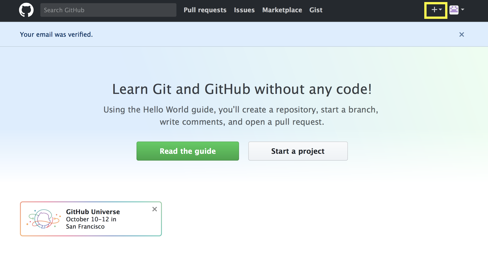
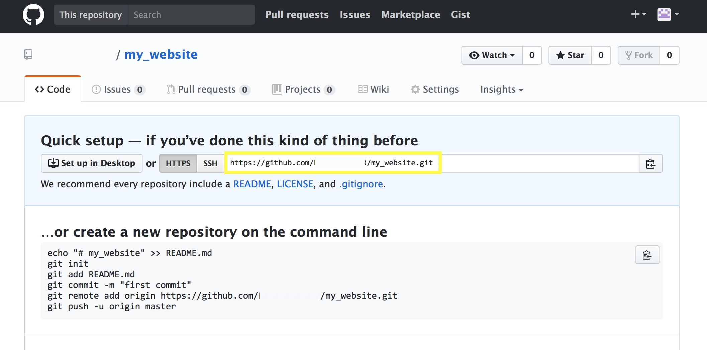
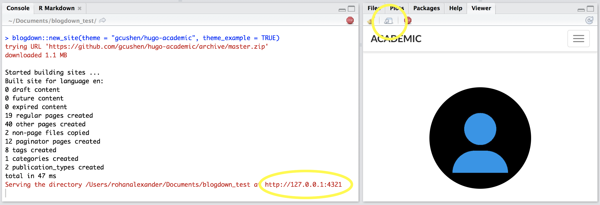

Thank you to Minhee Chae and Peter Gibbard for helpful comments.
Blogdown is a package that allows you to make websites (not just blogs, notwithstanding its name) largely within R Studio. It builds on Hugo, which is a popular tool for making websites.
Blogdown lets you freely and quickly get a website up-and-running. It is easy to add content from time-to-time. It integrates with R Markdown which lets you easily share your work. And the separation of content and styling allows you to relatively quickly change your website’s design.
That said, using Blogdown is more work than Google sites or Squarespace. It requires a little more knowledge than using a basic Wordpress site. And if you want to customise many aspects of your website, or need everything to be ‘just so’ then Blogdown may not be for you.
Blogdown is still under active development and various aspects may break in future releases. That said, the investment of time required to set up a Blogdown website is unlikely to be wasted. Even if Blogdown were shuttered tomorrow most of the content could be repurposed for a regular Hugo website.
A Blogdown user-guide is being written by Yihui Xie, Amber Thomas, and Alison Presmanes Hill. The current draft can be viewed here: https://bookdown.org/yihui/blogdown/. Alison Presmanes Hill also has a very helpful post on getting started: https://apreshill.rbind.io/post/up-and-running-with-blogdown/.
This post is a simplified version of those two resources. It sticks to the basics and doesn’t require much decision-making. The purpose is to allow someone without much experience to use Blogdown to get a website up-and-running. Head to those two resources once you’ve got a website working and want to dive a bit deeper.
To use Blogdown you need R and R Studio.
You need to install the following packages: devtools, blogdown. To do this open R Studio and type the following into the console, hitting enter at the end of each line to run the command:
install.packages("devtools")
devtools::install_github("rstudio/blogdown")This section follows Alison Presmanes Hill’s post closely. Go there for more information.
It will be easier to put your website on the internet if you have a GitHub account. To create a GitHub account, go to https://github.com/ and sign-up for a free account. This restricts you to making everything public, but as we are using GitHub for a public website that’s fine. Once you have an account, create a new repository by clicking on the plus and call it ‘my_website’.
knitr::include_graphics("images/blogdown_github_1.png")
Don’t worry about including a readme or gitignore. Once you get to the ‘Quick setup’ page, copy the website address.
knitr::include_graphics("images/blogdown_github_2.png")
Open Terminal (either cmd + space then search for ‘Terminal’ or find it in your Applications). Use a combination of typing ls followed by ‘return’ and typing cd followed by ‘return’, to navigate to your ‘Documents’ folder. This is where your website will live for now.
Type git clone and paste the address you copied earlier and follow by ‘return’. This links that folder to your GitHub account.
Open R Studio and install Hugo via the blogdown package with the following code:
blogdown::install_hugo()In R Studio create a new project in the folder that you just created ‘my_website’. To do this click on: File -> New Project -> Existing Directory. Then navigate to the folder ‘my_website’. This will open a new R Studio session. Creating a project just adds a .proj file in the folder that makes it easier to come back to your website later.
Using that new R Studio session create your website with the following code:
blogdown::new_site(theme = "gcushen/hugo-academic", theme_example = TRUE)This will:
The console and viewer of your R Studio session should look like this:
knitr::include_graphics("images/blogdown_serve_site.png")
At this point, the default website is being ‘served’ locally. This means that changes you make will be reflected in the website that you see in your R Studio Viewer. To see the website in a web browser click the ‘show in new window’ button on the top left of the Viewer. This is circled in the above image. That will open the website using the address that the R Studio also tells you.
The first change to make is to update the headshot. In your folder, go to my_website -> static -> img. Replace ‘portrait.jpg’ with your own square headshot jpg. If you do this correctly then when you go back to your website the image will have updated.
In your folder, go to my_website -> content -> home -> about.md. That should open in R Studio or your text editor. Any changes that you save should immediately show up in your website.
Search for ‘# List your academic interests.’ or go to line 12. There you can change your academic interests. If you don’t want this to show up on your website then you can just delete or comment out lines 12-18.
Search for ‘# List your qualifications (such as academic degrees).’ or go to line 20. There you can change your academic qualification. If you don’t want this to show up on your website then you can just delete or comment out these lines.
The ‘year’ is a numeric field. If you’d prefer to include duration (e.g. 2013 – 2017), then replace the ‘2012’ with ‘“2013 – 2017”’ (the "" are important). Or similarly, if you are expecting a degree then you could replace the ‘year’ with ‘“Expected month year”’.
Search for ‘# Biography’ or go to line 43. There you can add a brief biography.
Most of the other files in my_website -> content -> home just display content from elsewhere. This is because of the setup of the website. The exception is teaching.md. Open that and edit everything after line 15.
In your folder, go to my_website -> content -> publication. There are two default publications added there. You can edit those and then copy them to add extra publications.
If you want a blog in your website then the content is saved in: my_website -> content -> post. If you don’t want a blog then just delete this folder and comment out the posts menu item from my_website -> config.toml file so it doesn’t show up in the menu.
Once your website is working, if you want a new blog post, then you can simply use the R Studio menu bar: Tools -> Addins -> New Post.
Go through the different parts and change it as you need.
To come back to editing your website once you’ve closed R Studio, go to the ‘my_website’ folder and then double-click on the Rproj file, ‘blogdown_test.Rproj’. That will open a new instance of R Studio.
From there you can type ‘blogdown:::serve_site()’ into the console to serve your site and then continue editing, or you could use the R Studio menu bar: Tools -> Addins -> Serve Site.
So far everything has happened on your own computer. The first step to making your website public is to commit these changes to GitHub. To do this open Terminal again and as before use cd and ls to navigate to ‘my_website’.
Once there, type each of the following lines (adding your own description) and follow each by ‘return’
git add -A
git commit -m "DESCRIBE THE CHANGE YOU ARE ADDING"
git push(You may be asked for your GitHub password. Terminal is a bit tricky to type passwords into because you don’t know how many characters you’ve typed, but have a go and follow it by ‘return’.)
There are many ways to make your website public, but the best at the moment is to use Netlify. I don’t have anything to change from the instructions of Alison Presmanes Hill and you can follow those here: https://apreshill.rbind.io/post/up-and-running-with-blogdown/#deploy-in-netlify.